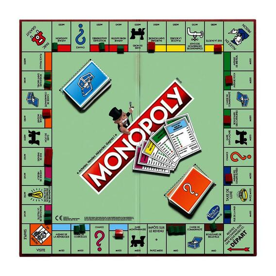

|
Sergei Shpolskyy I'm student of York University in Toronto, where I study Information Technology.
I have shown reasonably strong results upon graduating high school in Maple, with GPA of 91.25%. I've received the Excellence in Mathematics Award for outstanding performance in Advanced Functions and Calculus.
Before school in Canada I have been enrolled in Shchaslyvs'kyy NVK secondary school in Ukraine, where I was actively participating in various olympiads in Physics, Mathematics and Astronomy.
|
{kind=link}
Extracurricular AchievementsOutside of University I have engaged in different kinds of activities such as football, basketball, and sometimes gaming. I have also been involved in Piano Tutoring. |
|
Arcadia Academy of Music: The Choice for Generations
Carmine Di Rauso Sr. - Founder 2023 about / YouTube Academy of music where I have taught how to play piano. |
|
|  |
Technopoly: a Java Parody on Monopoly
Sergei Shpolskyy - Developer 2022 Download This is a Java implementation of the classic board game Monopoly where properties are represented by companies that support environmental sustainability. Players move around the board buying and trading green companies. Chance and Community Chest cards encourage recycling, renewable energy, and reducing waste. The game aims to educate players about sustainability while providing fun gameplay. |
My Rewards |
|
International Music Competition "Chestnut Piano"
Winner of the Second Prize for Orchestra and Two Piano category, 2019 Award Winner for Piano with Orchestra category, 2019 |
|
|
All Ukrainian Festival of R. Glier "Spring Notes"
Award Winner for Piano Solo, 2013 |
|
|
Math Olympiad
Award Winner for All Ukrainian Math Olympiad, 2018 Award Winner for Kyiv Math Olympiad, 2015-2017 |
|
|
Physics Olympiad
Award Winner for Kyiv Physics Olympiad, 2018-2020 |
|

|
Astronomy Olympiad
Award Winner for Kyiv Astronomy Olympiad, 2020 |
|
Feel free to steal this website's source code. Do not scrape the HTML from this page itself, as it includes analytics tags that you do not want on your own website — use the github code instead. Also, consider using Leonid Keselman's Jekyll fork of this page. |